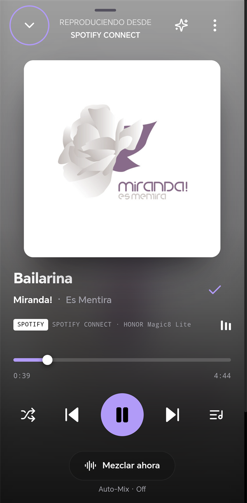

Spotify dentro de MURMUR
Tus canciones suenan desde Spotify sin abrir su app, también con la pantalla apagada. Si una falla, MURMUR pone la misma grabación de YouTube Music.
Busca una vez, arma una sola cola y escucha en un reproductor oscuro y cuidado. En el teléfono, en el coche con Android Auto o diciendo «Ok MURMUR».

MURMUR no te pide cambiar de servicio. Usa las cuentas que ya tienes y las junta en una app pensada para escuchar.
Tus canciones suenan desde Spotify sin abrir su app, también con la pantalla apagada. Si una falla, MURMUR pone la misma grabación de YouTube Music.
Tus playlists, mixes, álbumes y recomendaciones, tal como los tienes guardados.
Pide una canción, un artista o un mix sin tocar la pantalla. MURMUR te contesta en voz alta.
Tu biblioteca, tus mixes y lo que suena, en la pantalla del coche.
La línea que suena se ilumina. Toca cualquier verso y la canción salta a ese momento.
Un visualizador que reacciona al audio real y toma los colores de la portada.
Pausa, salta o habla con MURMUR desde la pantalla de inicio.
Guarda lo que más escuchas solo cuando estás en Wi‑Fi, para oírlo sin gastar datos.
Cuando sale una versión nueva, MURMUR te avisa y la instala sin que vuelvas a esta página.
MURMUR no está en Play Store: se instala con un archivo APK, como muchas apps independientes.
Abre esta página en tu teléfono Android y toca el botón. El archivo pesa unos 25 MB.
Descargar MURMUR.apkAndroid te pedirá permiso para instalar apps de origen desconocido desde tu navegador o tu gestor de archivos. Actívalo solo para esa app y vuelve.
MURMUR te lleva paso a paso para entrar a YouTube Music y a Spotify. Las siguientes versiones se instalan desde la app.
Requiere Android 8.0 o posterior en un teléfono de 64 bits.
Las sesiones se guardan en tu teléfono. MURMUR no ve tus contraseñas ni las manda a ningún servidor propio.
Inicias sesión dentro de MURMUR con tu cuenta de Google, igual que en la web. Con eso aparecen tu biblioteca, tus mixes y tus recomendaciones.
Spotify pide que cada persona use su propia llave (gratis, para cuentas Premium). La app te guía y te deja cada dato listo para copiar:
Como MURMUR no viene de Play Store, Android Auto la oculta hasta que lo permites una vez:
Tus sesiones, tu llave de Spotify, tu historial y tus descargas viven en tu teléfono. Ninguna cuenta ni dato pasa por servidores de MURMUR, porque MURMUR no tiene servidores: la app habla directo con Spotify, YouTube Music y los servicios de letras.
Gratis, para Android, con las cuentas que ya tienes.